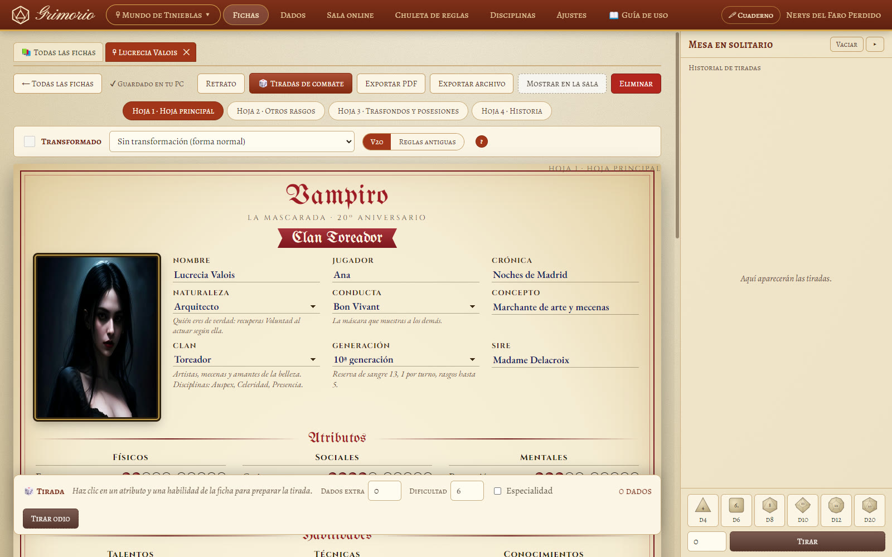
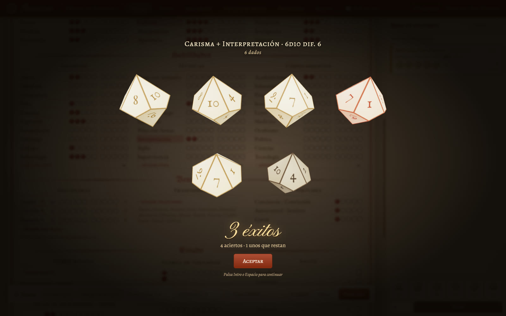
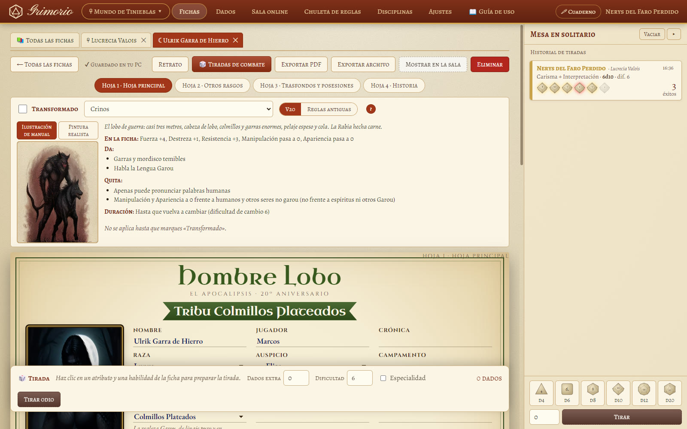
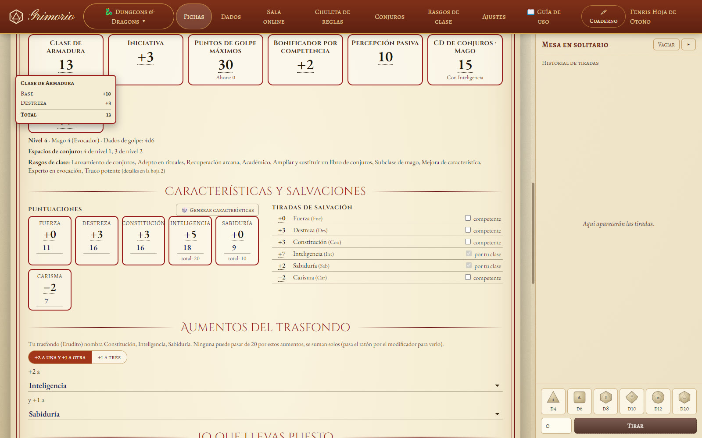
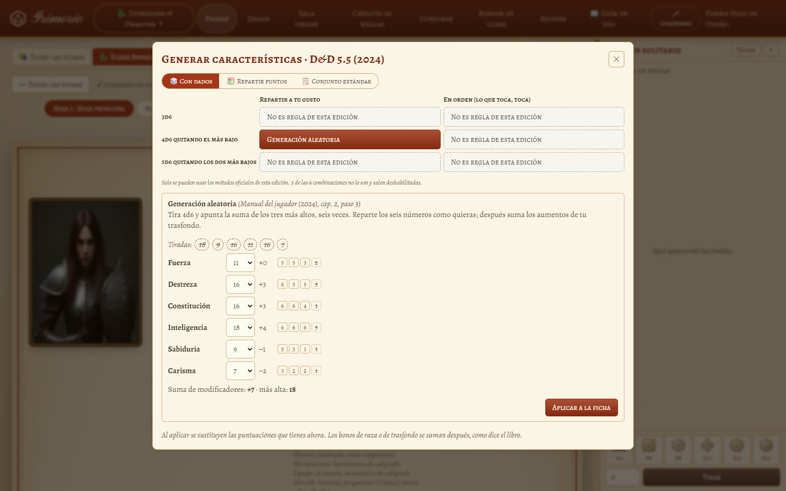
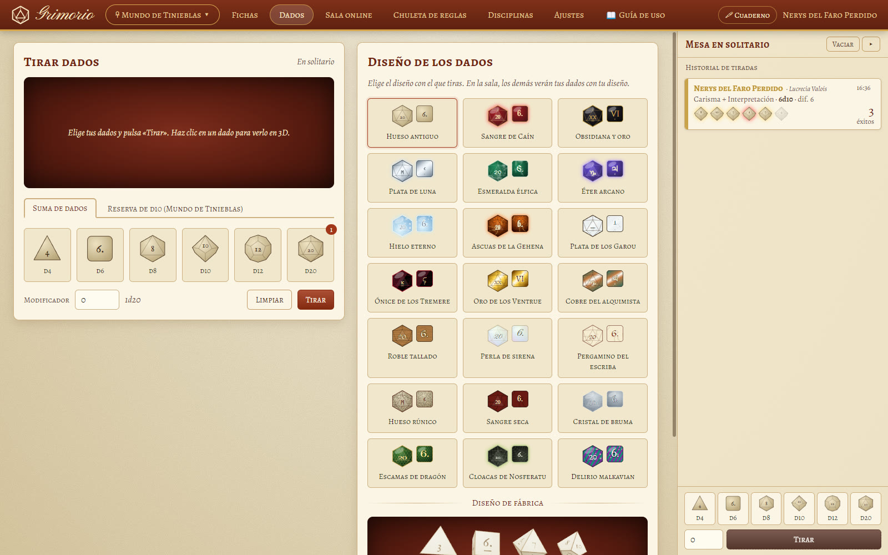

📜 Fichas como en papelSe rellenan con un clic y completan lo que marca el libro. Con retrato y en PDF.
🎲 Dados 3DRuedan en grande en el centro de la pantalla. 21 diseños, o crea el tuyo.
🌐 Juega onlineSala con un código de 6 letras, sin cuentas: roles, tiradas ocultas, iniciativa y mapa.
🐺 TransformacionesCrinos, Forma Horrenda… La ficha y las tiradas cambian solas.
🐉 D&D que calcula soloCA, ataques, conjuros… y pasa el ratón para ver de dónde sale cada punto.
📚 Reglas a un clicChuleta, disciplinas, conjuros y rasgos de clase, con buscador.
Así se ve

Una ficha de Vampiro con su retrato

La tirada, en grande

Transformación en Crinos

D&D: de dónde sale cada punto

Genera tus características

21 diseños de dados
Curiosidades
Al abrirlo te toca un nombre de fantasía al azar para la sala: «Nerys del Faro Perdido», «Halvar del Último Invierno»…
Los poderes de niveles 6 a 9 de las disciplinas están ocultos para no destripar sorpresas.
En D&D, el generador de características solo deja usar los métodos oficiales de tu edición.
Tres estilos: manuscrito, taberna y bosque. Y un cuaderno con aspecto de libro antiguo para tus notas.
Gratis y en castellano. Windows 10/11 (64 bits) —no se instala: un solo archivo—, Android 5.1 o superior y Linux. Tus fichas se guardan en tu PC; sin cuentas ni publicidad.
Requisitos e instrucciones en la página de descargas.